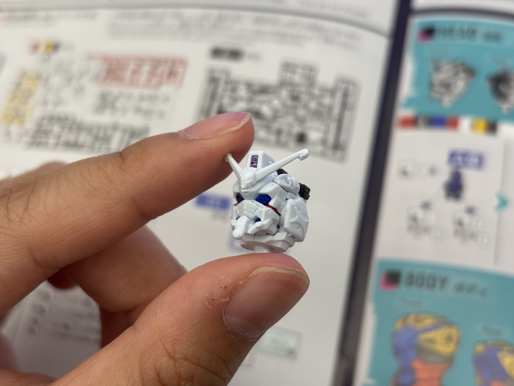

The Wing Gundam stands approximately 13 cm at 1/144 scale, corresponding to an in-universe height of roughly 16.3 m. A single armor part runs 10–20 mm in its longest dimension, and panel-line widths are routinely 0.15–0.30 mm. I started with one question: which features of the kit's appearance are aesthetic choices, and which are forced by the molding process?
8. Design Analysis: Engineering and Proportions
8.1 What I Looked For
13 cm
Model height at 1/144 scale
0.8–1.5
Armor wall thickness (mm)
4
Max colors per injection machine

8.2 Wall Thickness Governs Both Stiffness and Moldability
HIPS armor halves on the HG Wing Gundam are typically 0.8–1.5 mm thick. Below ≈0.6 mm the runner becomes prone to short shots — incomplete fill — during injection because the melt freezes at the cavity wall before reaching the far end of the cavity. Above ≈2.0 mm the part suffers visible sink marks on the show-side surface from differential cooling between the surface and the part interior. The 0.8–1.5 mm range is the solution to "stiff enough to survive snap-fit insertion forces" and "thin enough to mold cleanly at HG cycle times."
Design Constraint
Wall thickness is set by physics, not by feel. The 0.8–1.5 mm range is the simultaneous solution to two problems Bandai cannot escape: melt fill at one extreme, surface sink at the other. Thinner kits would need different tooling; thicker kits would lose the panel-line crispness that gives GunPla its visual signature.
8.3 Joint Location Is Constrained by Polycap Geometry
Because polycaps are molded as discrete LLDPE inserts, every articulating joint on the kit must be sized around the available polycap inventory. Inspection of the runner shows that the HG Wing Gundam reuses approximately six distinct polycap shapes for shoulders, elbows, hips, knees, ankles, and the wing-root pivot.
This re-use is itself a manufacturing constraint: it minimizes the number of distinct PE molds and standardizes joint resistance across the kit. A designer who wanted a unique joint geometry at, say, the elbow would either have to commission a new polycap mold or compromise the design back onto the existing inventory.
8.4 Color Blocking Maps onto Runner Identity
The five primary colors of the kit — white (large surface armor), blue (boots, chest detail), red (shield, accents), yellow (V-fin and trim), and black (joints, weapons) — are constrained by the System Injection machine's four-color limit. The layout team decomposes the design onto runners that respect that constraint.
Notable Case
The Wing Gundam's yellow V-fin is one of the smallest and thinnest parts in the kit; its molding tolerance is the limiting case for the entire mold tool. Black HIPS runners commonly carry a higher load of carbon-black pigment (≈2 wt.%), slightly raising the modulus and lowering surface gloss compared with the white runner.

8.5 Gates and Fill Paths